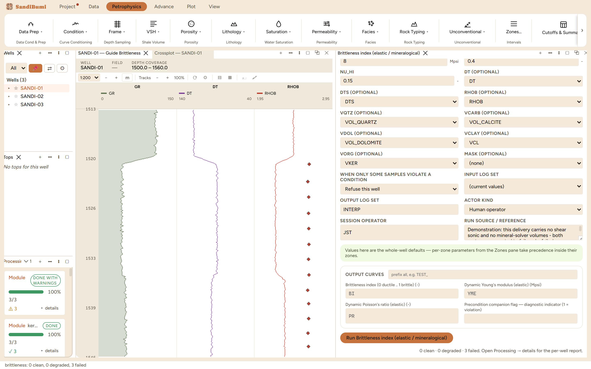

A brittleness index from 0 (ductile) to 1 (brittle), computed two ways: an
elastic route from sonic and density through dynamic moduli, and a
mineralogical route from a mineral-solver's volumes. Reach for it when
completion design needs to rank an unconventional section's frac candidates.
This chapter is deliberately a demonstration of the module refusing to
answer, because the example dataset carries neither of the inputs the two
routes require, and what a run does when it cannot answer is worth a chapter
of its own.
The physics
Vp, Vs = 304.8/DT, 304.8/DTS [km/s] G = ρ·Vs² K = ρ·(Vp² − 4/3·Vs²)
ν = (3K − 2G) / (2(3K + G)) E = 9KG / (3K + G) → Mpsi
BI = (E_norm + ν_norm) / 2 (Rickman et al. 2008)
BI = Qz / (Qz + carbonate + clay) (Jarvie et al. 2007)
BI = (Qz + Dol) / (Qz + Dol + calcite + clay + organic) (Wang-Gale 2009)
The elastic route normalizes Young's modulus over E_LO..E_HI and Poisson's
ratio over NU_LO..NU_HI and averages the two: stiff and low-ν rock ranks
brittle. The shipped windows (1..8 Mpsi, 0.40..0.15) are the Barnett
calibration and must be re-anchored per basin. The mineral routes count
brittle minerals as a fraction of the total, and they disagree with each other
about dolomite on purpose: Wang-Gale counts it brittle, Jarvie's quartz-only
numerator does not.
What this delivery cannot answer, on camera
The elastic route requires a shear sonic, and this delivery carries none.
The run reports 0 clean · 0 degraded · 3 failed, each well saying:
no finite output — every sample is missing (check inputs, e.g. precalc not run)
Switching to METHOD mineral_jarvie fails the same way, because no SandiMin
run has produced VOL_QUARTZ, VOL_CALCITE, or their siblings in this project.
And the part that matters: after both failed runs, the project holds
zero BI, YME, or PR samples. A run that reports failure writes nothing
and versions nothing; failure is a status, never a curve of zeros.
The elastic route's normalization windows, with the shipped
Barnett calibration visible and editable.

Three failed wells, and nothing written: the honest outcome for
a module missing its inputs.
The picks and why (for when the inputs exist)
METHOD elastic needs DT, DTS, and RHOB from acquisition. The
windows E_LO 1 / E_HI 8 Mpsi and NU_LO 0.40 / NU_HI 0.15 are the Rickman
Barnett anchors; recalibrate them to the local moduli range or every well
in a soft basin reads ductile.
METHOD mineral_jarvie or mineral_wanggale needs a
SandiMin run first; the volumes are read from
its VOL_* outputs, and a missing mineral is treated as absent. Choose
Wang-Gale where dolomite is a real brittle contributor.
The METHOD list is closed and checked before anything runs: asking for
a method id outside elastic, mineral_jarvie, mineral_wanggale is
refused as a precondition, by name.
Step by step
Confirm the inputs exist: DTS in the delivery for the elastic route, or
a SandiMin interpretation for the mineral routes.
Open Petrophysics ▸ Unconventional ▸ Brittleness index (elastic /
mineralogical), pick the METHOD the data supports, and press
Run.
Where both routes can run, run both: agreement between an elastic and a
mineralogical brittleness is the cheapest cross-validation this domain
offers.
QC and pitfalls
Elastic E and ν here are DYNAMIC. Apply a static correlation before any
geomechanical use; a dynamic modulus quoted as static overstates
stiffness.
The Rickman windows are a calibration, not physics. Check the actual E
and ν ranges of the section before trusting the 0-to-1 scale.
In the mineral routes a missing mineral counts as absent, which is
correct inside a solved model and dangerous outside one: feed them a
complete SandiMin answer, not a lone VCL.
A failed run writing nothing is a feature to rely on: if BI exists in
the project, some run actually answered. Never pre-create placeholder
outputs for a module that has not run.